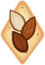

Toppings:


Para poder entrar al Paraíso Dorado Siempre Reluciente, debes pasar las pruebas del Guardián: la galleta de queso quemado. Eternamente devota
de la Diosa de la Ciudad Dorada, esta galleta ha ahuyentado a innumerables intrusos a las puertas del Reino del Queso Dorado. Aunque muchos lo
han intentado, ninguno ha logrado pasar a los temibles chacales de Burnt Cheese Cookie y al propio guardián, vestido con su máscara de chacal.
"¡Sólo los dignos pueden entrar al Paraíso Dorado!"
Esta piedra contiene un trozo del alma de Burnt Cheese Cookie. Emana un brillo decidido, lleno de la inquebrantable determinación de protegerse contra los intrusos.

Tierra para todos los aliados. Luego, las rocas explotan, causando daño y aturdiendo a los enemigos. Burnt Cheese Cookie otorga al
guardián de las puertas y las ventajas de Protección contra maldiciones a él y al aliado Cookie con el ATK más alto, absorbiendo parte
del daño que reciben con DMG Focus. La resistencia al daño de Burnt Cheesey Golden Cheese Cookie aumenta cuando entran juntos
en una batalla.